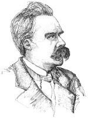

Muhtemelen hiçbir filozof, Friedrich Nietzsche (1844-1900) kadar sık ve vahşice denebilecek ölçüde yanlış yorumlanmamıştır. Alman kasabası Röcken bei Lützen’de doğan Nietzsche, yirmi dört yaşında İsviçre’de Basel Üniversitesi’nde profesör olmayı başararak, klasik dilbilimi alanında ünlü genç bir bilgin oldu. Nietzsche, kötüleşen sağlık durumu yüzünden öğretim görevini bıraktı ve 1889’da zihnen ve fiziken yatağa düştü. Kız kardeşi tarafından bakılan bir deli olarak da öldü.

Nietzsche’nin felsefesindeki merkezî bir tema, insanları ahlakî, bilimsel ve estetik değerlerini sorgulamaya teşvik ettiği, “tüm değerlerin yeniden değerlendirilmesi” adını verdiği felsefesidir. Nietzsche, Avrupa kültürünün – özellikle Hıristiyan ahlakının – temelini oluşturan değerlerin çoğunun yaşamı ve keyif almayı gereksizce kısıtladığına inandı. Nietzsche’ye göre bu değerlerin pek çoğu güçsüz ve alıngan kişiler tarafından güçlünün üzerinde güç kazanmak için bir araç olarak icat edildi. Ona göre uysal ve mütevazının kutsanmasıyla Hıristiyanlık, hastanın sağlıklıya karşı zaferidir. Değerlerin her bir sistemi ve her felsefî sistem için Nietzsche, “Ne tip bir hayata hizmet ediyor?”, diye sordu.
Nietzsche’nin bir diğer önemli fikri, dünyanın kendisini daha önce olduğu gibi sonsuza dek tekrar edeceği anlayışı olan “ebedi dönüş”tür. Ebedi dönüş dolayısıyla, hepimiz hayatlarımızı en ince ayrıntısına kadar, tekrar ve tekrar, aynen sahip olduğumuz gibi yaşayacağız. Nietzsche, bunu bir sınav olarak sunar: Ne tip bir insan, en zavallı ve en hakir görüleni bile olsa, hayatının tüm anlarının tekrarlanmasına tüm sonsuzluk boyunca gönüllü olabilir?
EK BİLGİLER:
1. Birçok uzman, Nietzsche’nin Fransa-Prusya savaşında sıhhiye eri olduğu zamandan veya bir fahişeden geçen frengi hastalığı olduğuna inanır.
2. Nietzsche’nin kız kardeşi, Elizabeth Förster-Nietzsche, kardeşinin felsefesini kendi siyasî amaçlarına göre kullanmaya çalışan bir Nazi sempatizanıydı. Nietzsche’nin kendisi, hem Alman milliyetçiliğinin hem de Yahudi-karşıtlığının da sıkı bir eleştirmeniydi.
3. Nietzsche’nin üst insan (Übermensch) kavramı, Nazilerin ideal Aryan kahramanını tanımlamak için kullandıkları bir ifadedir. Nietzsche, üst insanın tam olarak neye benzediğini söylemedi, ama kavgacı veya şiddet yanlısı olmadığı açıktı.
4. Nietzsche, Alman besteci Richard Wagner ile yakın bir arkadaşlığa sahipti. Nietzsche’nin yazılarında Wagner’ı öldüresiye eleştirmesinden sonra arkadaşlıkları bozuldu. Bazı kanıtlar, arkadaşlıklarındaki bozulmanın nedeninin Wagner’ın Nietzsche’nin doktoruna genç adamdaki görme sorunlarının kaynağına dair uygunsuz bir fikir (aşırı mastürbasyon!) ileri sürmesi olduğunu iddia eder.